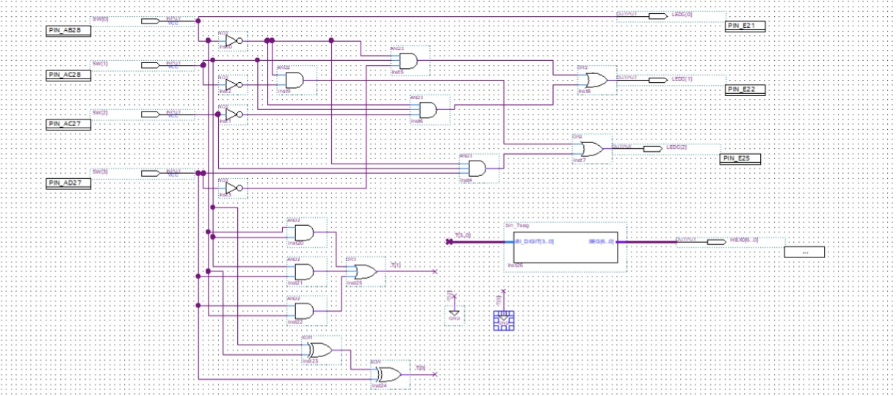
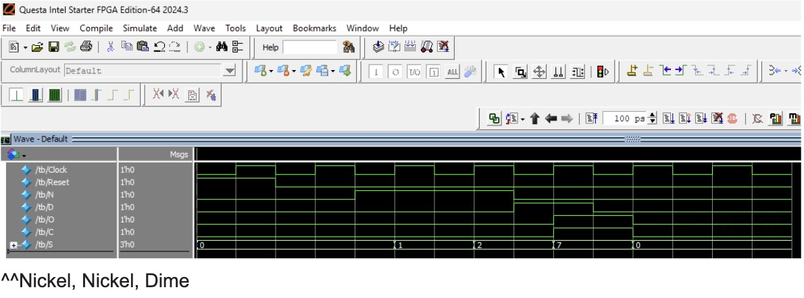
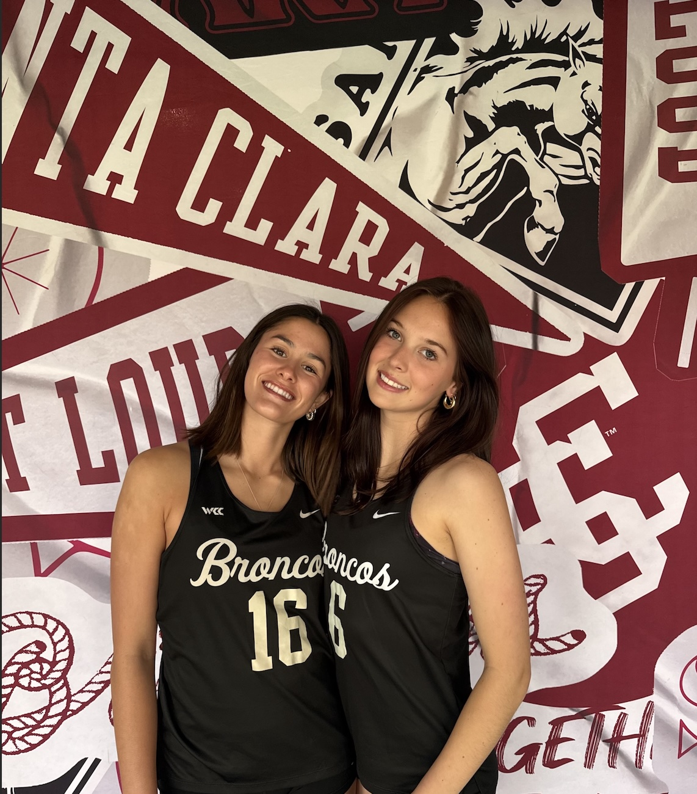

Current Projects
Iris — Voice-Activated Household Reminder Hub
Starting soon — An ESP32-based shared voice assistant for the household. Anyone can speak their name along with a task or plan, then later ask what's on everyone's schedule for the day. Involves audio capture, speech-to-text integration, natural language parsing, persistent on-device storage, and a small display showing animated "eyes" that respond to device state.
- C++
- ESP32
- Embedded Systems
- Audio/Signal Processing
- Hardware/Software Integration
Work
FPGA Traffic Metering Controller
Designed and implemented a three-lane traffic metering controller using Verilog HDL and an Intel DE2-115 FPGA. Developed and simplified combinational logic using truth tables and Karnaugh maps, verified the design through Quartus simulation, and implemented the system on physical FPGA hardware.
- Verilog HDL
- Quartus Prime
- Intel DE2-115 FPGA
- Digital Logic
- Karnaugh Maps

Vending Machine FSM Controller
Designed and verified a Moore finite state machine controller for a coin-operated vending system in Verilog, implementing the same design using two independent approaches: minimized Boolean equations and behavioral case-statement logic. Confirmed both implementations produced identical results across all test scenarios through RTL simulation.
- Verilog HDL
- Finite State Machines
- Boolean Logic
- RTL Simulation
- Digital Logic

Smaller Projects
Zoo Feeding Schedule Manager
A C program built for a data structures course, managing zoo feeding schedules with dynamic memory allocation, a doubly linked list for action history, and file-based persistence.
- C
- Data Structures
- File I/O
Hotel Check-In System
A C program managing hotel guest check-ins, check-outs, room transfers, and guest lookups with input validation.
- C
- Arrays
- String Handling
About Me
I'm an Electrical & Computer Engineering student at Santa Clara University, with a minor in Computer Science Engineering. I was previously a Division 1 Beach Volleyball player at SCU. I am currently taking courses teaching me how to use Electrical Circuits and Microcontrollers. I have a passion for robotics and aerospace and can't wait to learn more throughout my 3rd year at Santa Clara.
Outside of engineering, I'm usually planning my next trip, hiking a mountain, or picking up a new hobby. I love music, reading, and finding new gluten free recipes to try.
My Resume My GitHub My LinkedIn